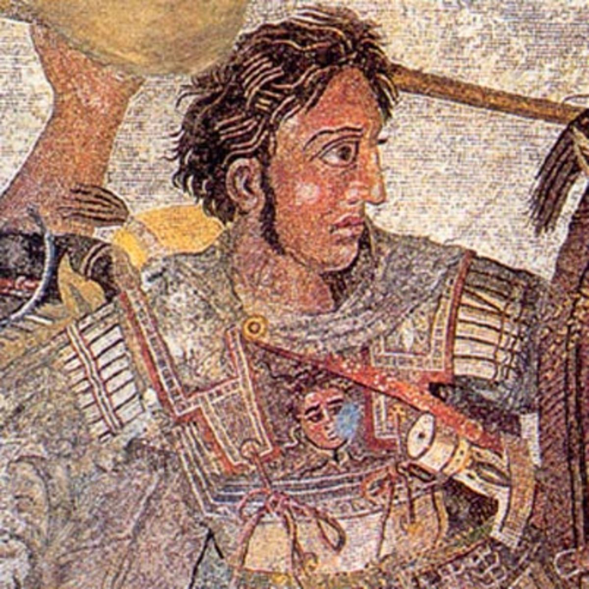

The Life and Times of a Great Pagan
The life and times of Alexander the Great are a fascinating character study in to one of the greatest men from the Classical Era. However, this is not the place for that, as the amount of information avaliable could fill books. It actually fills many books, so this will just be a quick overview of just why the man earned the title the Great. (or the far superior Megas Alexandros)
The long and short of it is that he was raised in war, and was very very good at it. His father, King Philip, had been uniting Greece under his command throughout Alexanders whole childhood. In fact, he was leading troops at the tender age of 16, and used them to protect his fathers power. When a tribe of nearby Thracian began to cause trouble, he drove them off and colonized the land with Greeks. That practice would serve him well all his life, as his eventual empire was studded with Greek colonies.
Once his father died, Alexander inherited a shakey kingdom with a rather impressive army. At 20, the world lay open to him. After using said army to consolidate his hold over Greece, he began eyeing the real prize. Persia. The great empire had spread across the Middle East for centuries at this point. Mustering the Greek ancestral spite of the Persians that had existed since the days when spartans and persians clashed, the young king embarked on a daring conquest. Over the coming years, he lay claim to the whole of the Persian empire, and beyond. He did not live long to see it however, as he died before he had ever set foot in his homeland of Macedon again. He left no heir, and his many generals quickly claimed various kingdoms for themselves.